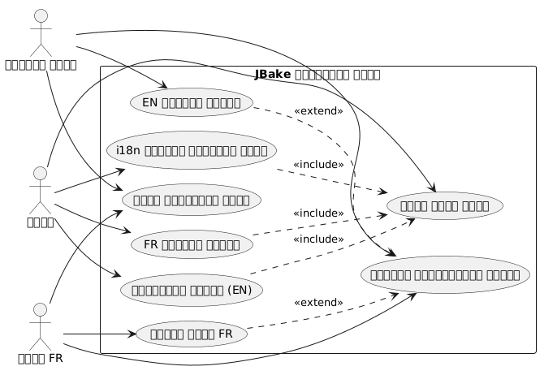
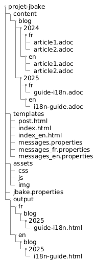
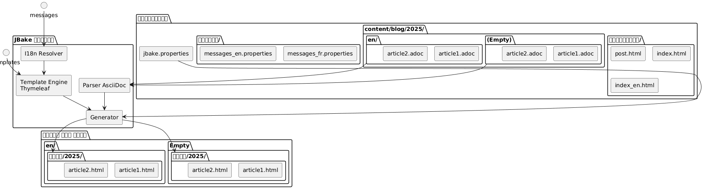
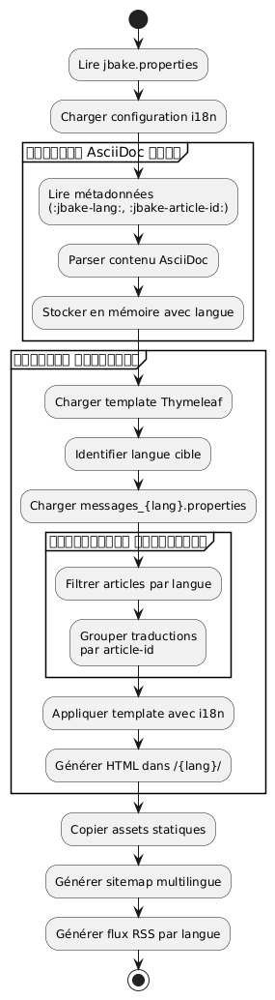

Thymeleaf-সহ একটি স্ট্যাটিক JBake সাইটের আন্তর্জাতিককরণ
Publié le 20 October 2025
ভূমিকা
একটি স্ট্যাটিক সাইটের আন্তর্জাতিকীকরণ (i18n) প্রথমে জটিল মনে হতে পারে, কিন্তু JBake Thymeleaf সহ সংযুক্ত করলে বহুভাষিক সাইট তৈরি করতে সুগম সমাধান প্রদান করে। এই পোস্টে, আমি আপনাকে দেখাব কিভাবে আমি আমার ব্লগে i18n প্রয়োগ করেছি, টেমপ্লেটিং এবং বিভিন্ন ভাষায় পোস্ট পরিচালনা উভয় দিকটি কভার করে।
ব্যবহারের ক্ষেত্রের ডায়াগ্রাম (Use Case)

আন্তর্জাতিকীকরণের আর্কিটেকচার
আমাদের পদ্ধতি দুটি স্তম্ভের ভিত্তিতে আধারিত :
-
টেমপ্লেটিংয়ের i18n: Thymeleaf বার্তা ফাইল ব্যবহার করে ইন্টারফেস উপাদান
-
বিষয়বস্তুর আন্তর্জাতীकरणভাষা অনুযায়ী আর্টিকেলগুলোকে একটি বিশেষ ফোল্ডার গঠনে সংগঠিত
সंরচনা চিত্র (ফাইল সংগঠন)

এই পদ্ধতি কেন?
এই বিভাজনটি অনুমতি দেয়:
-
ভাষার নির্বিশেষে ইন্টারফেসে সামঞ্জস্য বজায় রাখুন
-
কন্টেন্ট ও অর্টিকেলের অনুবাদগুলোকে স্বতন্ত্রভাবে পরিচালনা করুন
-
নতুন ভাষা যোগকরণকে সহজ করা, কোনো গুরুত্বপূর্ণ রিফ্যাক্টরিং ছাড়াই
-
কিছু ভাষায় শুধুমাত্র উপলব্ধ নিবন্ধ অনুমতি দেওয়া
কম্পোনেন্ট ডায়াগ্রাম

থাইমলীফ ব্যবহার করে টেমপ্লেটিংয়ের I18n
বার্তা ফাইলের গঠন
প্রথম ধাপ হল প্রতিটি সমর্থিত ভাষার জন্য প্রপার্টি ফাইলগুলো তৈরি করা:
src/jbake/templates/
├── messages.properties # Fallback par défaut
├── messages_fr.properties # Français
├── messages_en.properties # Anglais
└── messages_de.properties # Allemandবার্তা ফাইলগুলোর বিষয়বস্তু
এখানে একটি ফাইলের উদাহরণ`messages_fr.properties`:
# Navigation
nav.home=Accueil
nav.blog=Blog
nav.about=À propos
nav.contact=Contact
# Articles
article.readmore=Lire la suite
article.published=Publié le
article.tags=Étiquettes
article.also.available=Également disponible en
# Interface
site.title=Mon Blog Technique
site.description=Partage de connaissances et expériences
footer.copyright=© 2025 Tous droits réservés
search.placeholder=Rechercher un article...এবং এর ইংরেজি সমতুল্য`messages_en.properties` :
# Navigation
nav.home=Home
nav.blog=Blog
nav.about=About
nav.contact=Contact
# Articles
article.readmore=Read more
article.published=Published on
article.tags=Tags
article.also.available=Also available in
# Interface
site.title=My Tech Blog
site.description=Sharing knowledge and experiences
footer.copyright=© 2025 All rights reserved
search.placeholder=Search articles...টেমপ্লেটে ব্যবহার
আপনার Thymeleaf টেমপ্লেটগুলো, সিনট্যাক্সটি ব্যবহার করুন`#{}`বার্তা অ্যাক্সেস করতে :
<!DOCTYPE html>
<html xmlns:th="http://www.thymeleaf.org">
<head>
<title th:text="#{site.title}">Mon Blog</title>
<meta name="description" th:content="#{site.description}" />
</head>
<body>
<nav>
<a th:href="@{/}" th:text="#{nav.home}">Accueil</a>
<a th:href="@{/blog/}" th:text="#{nav.blog}">Blog</a>
<a th:href="@{/about.html}" th:text="#{nav.about}">À propos</a>
</nav>
<footer>
<p th:text="#{footer.copyright}">Copyright</p>
</footer>
</body>
</html>সিকোয়েন্স ডায়াগ্রাম - i18N সমাধান
Failed to generate image: PlantUML preprocessing failed: [From <input> (line 5) ]
@startuml
actor Auteur
participant JBake
participant "AsciiDoc\nParser" as parser
participant "Thymeleaf
^^^^^
Syntax Error? (Assumed diagram type: sequence)
@startuml
actor Auteur
participant JBake
participant "AsciiDoc\nParser" as parser
participant "Thymeleaf
ইঞ্জিন" as thymeleaf
participant "I18n
সমাধানকারী" as i18n
database "messages_*.properties" as messages
Auteur -> JBake: jbake -b
activate JBake
JBake -> parser: Lire article.fr.adoc
activate parser
parser --> JBake: Contenu + métadonnées\n(lang=fr, article-id=xyz)
deactivate parser
JBake -> parser: Lire article.en.adoc
activate parser
parser --> JBake: Contenu + métadonnées\n(lang=en, article-id=xyz)
deactivate parser
JBake -> thymeleaf: Générer page FR
activate thymeleaf
thymeleaf -> i18n: Résoudre #{nav.home}
activate i18n
i18n -> messages: Lire messages_fr.properties
messages --> i18n: "স্বাগত"
i18n --> thymeleaf: "স্বাগত"
deactivate i18n
thymeleaf -> JBake: Rechercher traductions\n(article-id=xyz, lang!=fr)
JBake --> thymeleaf: article.en.html trouvé
thymeleaf --> JBake: /fr/blog/article.html
deactivate thymeleaf
JBake -> thymeleaf: Générer page EN
activate thymeleaf
thymeleaf -> i18n: Résoudre #{nav.home}
activate i18n
i18n -> messages: Lire messages_en.properties
messages --> i18n: "বাড়ি"
i18n --> thymeleaf: "বাড়ি"
deactivate i18n
thymeleaf -> JBake: Rechercher traductions\n(article-id=xyz, lang!=en)
JBake --> thymeleaf: article.fr.html trouvé
thymeleaf --> JBake: /en/blog/article.html
deactivate thymeleaf
JBake --> Auteur: Site généré
deactivate JBake
@enduml
JBake-এ লোকেল কনফিগারেশন
আপনার ফাইলে`jbake.properties`, ডিফল্ট লোকাল সেট করুন :
# Locale par défaut
thymeleaf.locale=fr
# Encodage
template.encoding=UTF-8I18n দাস্তব্য : ফোল্ডার অনুযায়ী সংগঠন
প্রবাহ ডায়াগ্রাম (Flow) - উত্পাদন

ফোল্ডার গঠন
ফাইলের নামে উপসর্গ ব্যবহার করার পরিবর্তে, আমি ফোল্ডার-ভিত্তিক সংগঠন বেছে নিয়েছি, যা আরও স্পষ্ট এবং রক্ষণযোগ্য :
content/blog/
├── 2024/
│ ├── fr/
│ │ ├── introduction-jbake.adoc
│ │ ├── guide-thymeleaf.adoc
│ │ └── astuces-asciidoc.adoc
│ └── en/
│ ├── introduction-jbake.adoc
│ ├── thymeleaf-guide.adoc
│ └── asciidoc-tips.adoc
└── 2025/
├── fr/
│ └── internationalisation-jbake.adoc
└── en/
└── jbake-internationalization.adocএই পদ্ধতির সুবিধা
এই গঠনে कई সুবিধা আছে :
-
স্পষ্ট বিচ্ছেদ: প্রতিটি ভাষার নিজস্ব স্থান আছে
-
নমনীয় নামকরণ: ফাইলগুলো ভাষার অনুযায়ী বিভিন্ন নাম থাকতে পারে
-
স্কেলেবিলিটিএকটি নতুন ভাষা যোগ করা সহজ
-
প্রাকৃতিক সংগঠন: JBake-কে সময়তালিক যুক্তি অনুসরণ করে
লেখের মেটাডেটা
প্রতিটি নিবন্ধে মেটাডেটা থাকতে হবে যাতে অনুবাদগুলির মধ্যে লিঙ্ক তৈরি করা যায়। এখানে একটি উদাহরণ:
ফরাসি সংস্করণ(Note: I output nothing because no source text was provided.)2025/fr/internationalisation-jbake.adoc) :
= Internationalisation d'un site statique JBake
:jbake-type: post
:jbake-status: published
:jbake-date: 2025-10-20
:jbake-lang: fr
:jbake-article-id: jbake-i18n-thymeleaf
:jbake-tags: jbake, thymeleaf, i18n
:jbake-description: Guide pour mettre en place l'i18n avec JBakeইংরেজি সংস্করণ(2025/en/jbake-internationalization.adoc) :
= Internationalizing a JBake Static Site
:jbake-type: post
:jbake-status: published
:jbake-date: 2025-10-20
:jbake-lang: en
:jbake-article-id: jbake-i18n-thymeleaf
:jbake-tags: jbake, thymeleaf, i18n
:jbake-description: Guide to implement i18n with JBakeনোট: বৈশিষ্ট্য`:jbake-article-id:`গুরুত্বপূর্ণ : এটি একই নিবেদের বিভিন্ন অনুবাদকে যুক্ত করার অনুমতি দেয়।
URL কনফিগারেশন
মধ্যে`jbake.properties`, URL প্যাটার্নকে ভাষা অন্তর্ভুক্ত করতে কনফিগার করুন :
# Pattern d'URL avec langue
post.permalink.pattern=:lang/blog/:year/:name.html
# Langue par défaut
site.default.lang=frএটি টাইপের URL তৈরি করবে:
-
/fr/blog/2025/internationalisation-jbake.html -
/en/blog/2025/jbake-internationalization.html
বহুভাষিক প্রদর্শনের জন্য টেমপ্লেটস
নিবন্ধ টেমপ্লেট ভাষা নির্বাচকের সাথে
একটি টেমপ্লেট তৈরি করুন`post.html`উপলব্ধ অনুবাদগুলো দেখায়:
<!DOCTYPE html>
<html xmlns:th="http://www.thymeleaf.org">
<head>
<title th:text="${content.title}">Article</title>
</head>
<body>
<article>
<header>
<h1 th:text="${content.title}">Titre</h1>
<div class="article-meta">
<time th:text="${#dates.format(content.date, 'dd MMMM yyyy')}"
th:attr="datetime=${#dates.format(content.date, 'yyyy-MM-dd')}">
Date
</time>
<!-- Sélecteur de traductions -->
<div class="translations" th:if="${content['article-id']}">
<span th:text="#{article.also.available}">Aussi disponible en :</span>
<ul class="language-list">
<li th:each="post : ${published_posts}"
th:if="${post['article-id'] == content['article-id'] and post.lang != content.lang}">
<a th:href="${post.uri}"
th:text="${post.lang.toUpperCase()}">
LANG
</a>
</li>
</ul>
</div>
</div>
</header>
<div class="content" th:utext="${content.body}">
Contenu de l'article
</div>
<footer class="article-footer">
<div class="tags" th:if="${content.tags}">
<span th:text="#{article.tags}">Étiquettes :</span>
<span th:each="tag : ${content.tags}">
<a th:href="@{/tags/{tag}.html(tag=${tag})}"
th:text="${tag}">tag</a>
</span>
</div>
</footer>
</article>
</body>
</html>ভাষা অনুযায়ী ফিল্টারকৃত সূচক
প্রতিটি ভাষার জন্য ইন্ডেক্স টেমপ্লেট তৈরি করুন :
index.html(ফরাসি সূচী) :
<!DOCTYPE html>
<html xmlns:th="http://www.thymeleaf.org">
<head>
<title th:text="#{site.title}">Mon Blog</title>
</head>
<body>
<main>
<h1 th:text="#{nav.blog}">Blog</h1>
<div class="articles-list">
<article th:each="post : ${published_posts}"
th:if="${post.lang == 'fr'}">
<h2>
<a th:href="${post.uri}" th:text="${post.title}">Titre</a>
</h2>
<time th:text="${#dates.format(post.date, 'dd MMMM yyyy')}">
Date
</time>
<p th:text="${post.description}">Description</p>
<a th:href="${post.uri}" th:text="#{article.readmore}">
Lire la suite
</a>
</article>
</div>
</main>
</body>
</html>index_en.html(ইंग्लিশ ইন্ডেক্স) :
<!DOCTYPE html>
<html xmlns:th="http://www.thymeleaf.org">
<head>
<title th:text="#{site.title}">My Blog</title>
</head>
<body>
<main>
<h1 th:text="#{nav.blog}">Blog</h1>
<div class="articles-list">
<article th:each="post : ${published_posts}"
th:if="${post.lang == 'en'}">
<h2>
<a th:href="${post.uri}" th:text="${post.title}">Title</a>
</h2>
<time th:text="${#dates.format(post.date, 'dd MMMM yyyy')}">
Date
</time>
<p th:text="${post.description}">Description</p>
<a th:href="${post.uri}" th:text="#{article.readmore}">
Read more
</a>
</article>
</div>
</main>
</body>
</html>ভাষার মধ্যে নেভিগেশন
বিশ্বীয় ভাষা সিলেক্টর
প্রবাহ ডাইএগ্রাম - ব্যবহারকারী পাঠ

আপনার মূল টেমপ্লেটে একটি ভাষা নির্বাচক যোগ করুন:
<nav class="language-switcher">
<a href="/index.html"
th:classappend="${content.lang == 'fr'} ? 'active'"
title="Français">
🇫🇷 FR
</a>
<a href="/en/index.html"
th:classappend="${content.lang == 'en'} ? 'active'"
title="English">
🇬🇧 EN
</a>
</nav>সিলেক্টরের জন্য CSS শৈলী
.language-switcher {
display: flex;
gap: 1rem;
padding: 0.5rem;
background: #f5f5f5;
border-radius: 4px;
}
.language-switcher a {
padding: 0.5rem 1rem;
text-decoration: none;
color: #333;
border-radius: 4px;
transition: background 0.2s;
}
.language-switcher a:hover {
background: #e0e0e0;
}
.language-switcher a.active {
background: #007bff;
color: white;
}
.translations {
margin: 1rem 0;
padding: 1rem;
background: #f8f9fa;
border-left: 4px solid #007bff;
}
.language-list {
display: inline-flex;
gap: 0.5rem;
list-style: none;
padding: 0;
margin: 0;
}
.language-list li::after {
content: "•";
margin-left: 0.5rem;
}
.language-list li:last-child::after {
content: "";
}ভাষানুসারে RSS ফিড
ভাষাভিত্তিকভাবে আলাদা-আলাদা RSS ফিড পেতে, আলাদা টেমপ্লেট তৈরি করুন:
feed.xml(ফ্রাঞ্চ প্রবাহ) :
<?xml version="1.0" encoding="UTF-8"?>
<rss version="2.0" xmlns:th="http://www.thymeleaf.org">
<channel>
<title th:text="#{site.title}">Mon Blog</title>
<link th:text="${config.site_host}">http://example.com</link>
<description th:text="#{site.description}">Description</description>
<language>fr</language>
<item th:each="post : ${published_posts}"
th:if="${post.lang == 'fr'}">
<title th:text="${post.title}">Titre</title>
<link th:text="${config.site_host + post.uri}">Lien</link>
<pubDate th:text="${#dates.format(post.date, 'EEE, dd MMM yyyy HH:mm:ss Z')}">
Date
</pubDate>
<description th:text="${post.description}">Description</description>
</item>
</channel>
</rss>ভাল অনুশীলন এবং টিপস
1. আর্টিকেল আইডেন্টিফায়ারের সামঞ্জস্য
নিশ্চিত করুন যে`:jbake-article-id:`একই নিবন্ধের সকল অনুবাদেই একই। একই ফরম্যাট ব্যবহার করুন:
-
বিশ্বব্যাপীকরণের জন্য ইংরেজি শনাক্তকারী ব্যবহার করুন
-
শব্দগুলোকে আলাদা করতে হাইফেন ব্যবহার করুন
-
বিশেষ অক্ষর এড়িয়ে চলুন
2. সামঞ্জস্যপূর্ণ তারিখ
একটি নিবন্ধের সমস্ত অনুবাদকে একই প্রকাশের তারিখ রাখতে হবে।:jbake-date:) এইটি সাজানুক্রমে ও কালানুক্রমিক প্রদর্শনকে সহজ করে।
3. বহুভাষিক ট্যাগ
ট্যাগের জন্য, আপনার দুটি বিকল্প আছে :
বিকল্প ১: সার্বজনীন ট্যাগ ইংরেজিতে
:jbake-tags: java, spring-boot, microservicesঅপশন ২ : ম্যাপিং ব্যবহার করে অনুবাদিত ট্যাগ
# Version française
:jbake-tags: java, spring-boot, microservices
# Version anglaise
:jbake-tags: java, spring-boot, microservices4. অনুবাদ না ਹੋয়া লেখের ব্যবস্থাপানা
সব लेख অনুবাদ করা বাধ্যতামূলক নয়। যদি কোনো लेख শুধুমাত্র কোনো একটি ভাষায় থাকে, তাহলে সে শুধু অন্য ভাষার তালিকায় দেখাবে না।
5. বহুভাষিক সাইটম্যাপ
সব ভাষা অন্তর্ভুক্ত একটি সাইটম্যাপ তৈরি করুন :
<?xml version="1.0" encoding="UTF-8"?>
<urlset xmlns="http://www.sitemaps.org/schemas/sitemap/0.9"
xmlns:xhtml="http://www.w3.org/1999/xhtml"
xmlns:th="http://www.thymeleaf.org">
<url th:each="post : ${published_posts}">
<loc th:text="${config.site_host + post.uri}">URL</loc>
<lastmod th:text="${#dates.format(post.date, 'yyyy-MM-dd')}">Date</lastmod>
<!-- Liens alternatifs pour les traductions -->
<xhtml:link th:each="translation : ${published_posts}"
th:if="${translation['article-id'] == post['article-id'] and translation.lang != post.lang}"
rel="alternate"
th:attr="hreflang=${translation.lang},href=${config.site_host + translation.uri}" />
</url>
</urlset>নিষ্কর্ষ
একটি JBake সাইটকে Thymeleaf দিয়ে আন্তর্জাতিকীকরণ একটি মজবুদ و রক্ষণযোগ্য পদ্ধতি। টেমপ্লেটিং থেকে আই১৮এনকে (বার্তা ফাইল ব্যবহার করে) বিচ্ছिन्न করে এবং বিষয়বস্তু سے আই১৮এনকে (ফোল্ডার সংগঠন ব্যবহার করে) বিচ্ছিন্ন করে, আপনি একটি নমনীয় সিস্টেম পাবেন যা সহজে বিকশিত হতে পারে।
মনে রাখার জন্য গুরুত্বপূর্ণ পয়েন্টগুলো:
-
বার্তা ফাইলগুলো Thymeleafব্যবহারকারী ইন্টারফেসের জন্য
-
ফোল্ডার অনুযায়ী সংগঠন(বছর/ভাষা) নিবন্ধের জন্য
-
অর্টিকেল আইডিঅনুবাদগুলি সংযুক্ত করতে
-
নির্ধারিত টেমপ্লেটপ্রত্যেক ভাষার জন্য
-
স্পষ্ট URLভাষা কোড অন্তর্ভুক্ত
প্রসারণ চিত্র
Failed to generate image: PlantUML preprocessing failed: [From <input> (line 14) ]
@startuml
node "বিকাশ মেশিন" {
artifact "উৎসগুলো" {
folder "বিষয়/"
folder "টেমপ্লেটস/"
folder "সম্পদ/"
}
component "JBake CLI" as jbake
Sources --> jbake : jbake -b
}
node "বিল্ড সার্ভার
^^^^^
Syntax Error? (Assumed diagram type: component)
@startuml
node "বিকাশ মেশিন" {
artifact "উৎসগুলো" {
folder "বিষয়/"
folder "টেমপ্লেটস/"
folder "সম্পদ/"
}
component "JBake CLI" as jbake
Sources --> jbake : jbake -b
}
node "বিল্ড সার্ভার
(CI/CD)" {
component "GitHub Actions\nঅথবা GitLab CI" as ci
jbake --> ci : push
}
cloud "CDN / হোস্টিং" {
node "স্থির ওয়েব সার্ভার" {
artifact "তৈরারকৃত সাইট" {
folder "/fr/blog/"
folder "/en/blog/"
folder "/assets/"
}
}
}
ci --> "তৈরারকৃত সাইট" : déploiement
actor "পাঠকরা" as users
users --> "স্থির ওয়েব সার্ভার" : HTTPS
@enduml
এই আর্কিটেকচার আপনাকে সহজে দুটি ভাষা দিয়ে শুরু করতে দেয় এবং কোনো প্রধান রিফ্যাক্টরিং ছাড়াই আরও ভাষা যোগ করতে দেয়। সম্পূর্ণরূপে স্ট্যাটিক এবং পারফরম্যান্সবান, JBake দার্শনিক নকশাকে অনুসরণ করে।
ভালো বহুভাষিক উন্নয়ন ! 🌍